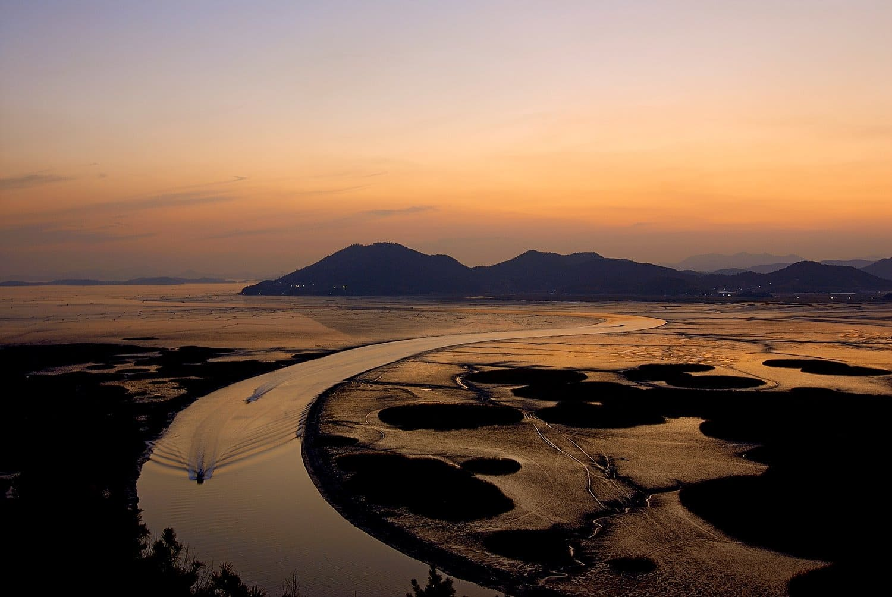

사람을 잇는 길,
오래된 문장을 따라.
매산등의 역사에서 향교의 배움까지.
지역의 삶을 새로운 시선으로 만납니다.

여행지에서, 한 걸음 더
아름다운 장소에는 언제나 사람의 이야기가 있습니다.
자연과 함께 살아온 일상, 골목에 남은 시간,
그리고 오늘도 이어지는 지역의 문화.
남도루트는 순천과 광양의 이야기를
누구나 이해할 수 있는 여행으로 연결합니다.
자연과 사람 사이
마음이 머무는 주제로
남도를 조금 더 가까이.
매산등의 역사에서 향교의 배움까지.
지역의 삶을 새로운 시선으로 만납니다.
나에게 맞는 로컬 오디오
한국 문화가 처음이어도, 이미 익숙해도.
나의 언어와 이해 수준에 맞춰 듣고 읽으세요.
가볍게 시작하는 여행
맞춤 해설에서 언어와 한국 문화 친숙도를 고르면 해설 예시를 읽고 들을 수 있습니다. 현재는 첫 화면 시안으로, 장소별 정식 해설과 지도는 준비 중입니다.
첫 투어는 순천 원도심 3곳을 연결하는 30~45분 코스를 목표로 준비합니다. 방문 장소와 실제 소요 시간은 현장 확인 후 확정합니다.
현재 여행 테마를 기획하고 있습니다. 예약·결제는 제공하지 않으며, 운영 일정과 조건이 확정되면 안내할 예정입니다.
조금 천천히 걸으면,
더 많은 이야기가 들립니다.